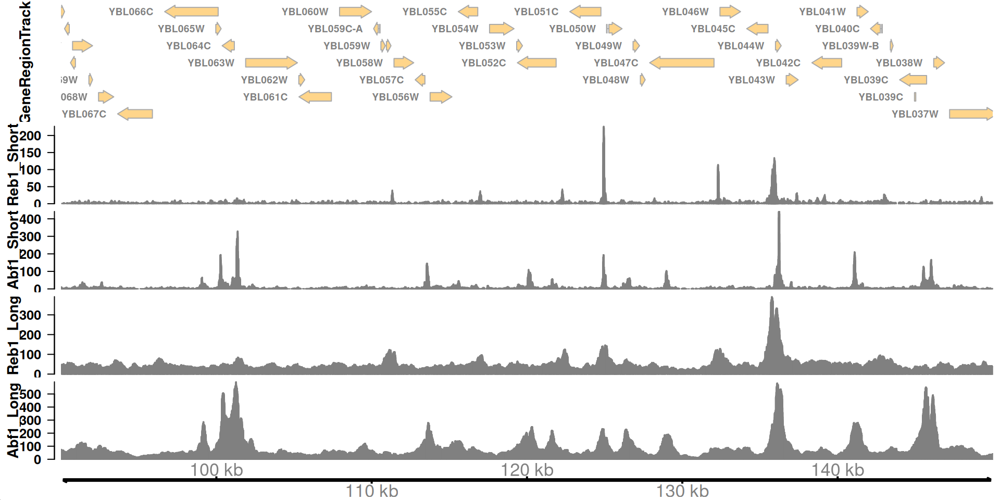

Warning: replacing previous import
'S4Arrays::makeNindexFromArrayViewport' by
'DelayedArray::makeNindexFromArrayViewport' when loading
'SummarizedExperiment'Factor-centric chromatin analysis
Jay Hesselberth
RNA Bioscience Initiative | CU Anschutz
2025-09-13
Where do transcription factors bind in the genome?
Today we’ll look at where two yeast transcription factors bind in the genome using CUT&RUN.
Where do transcription factors bind in the genome?
Techniques like CUT&RUN require an affinity reagent (e.g., an antibody) that uniquely recognizes a transcription factor in the cell.
This antibody is added to permeabilized cells, and the antibody associates with the epitope. A separate reagent, a fusion of Protein A (which binds IgG) and micrococcal nuclease (MNase) then associates with the antibody. Addition of calcium activates MNase, and nearby DNA is digested. These DNA fragments are then isolated and sequenced to identify sites of TF association in the genome.
Where do transcription factors bind in the genome?
Fig 1a, Skene et al.
Data download and pre-processing
CUT&RUN data were downloaded from the NCBI GEO page for Skene et al.
I selected the 16 second time point for S. cerevisiae Abf1 and Reb1 (note the paper combined data from the 1-32 second time points).
BED files containing mapped DNA fragments were separated by size and converted to bigWig with:
# separate fragments by size
awk '($3 - $2 <= 120)' Abf1.bed > CutRun_Abf1_lt120.bed
awk '($3 - $2 => 150)' Abf1.bed > CutRun_Abf1_gt150.bed
# for each file with the different sizes
bedtools genomecov -i Abf1.bed -g sacCer3.chrom.sizes -bg > Abf1.bg
bedGraphToBigWig Abf1.bg sacCer3.chrom.sizes Abf1.bwThe bigWig files are available here in the data/ directory.
CUT&RUN analysis
track_start <- 90000
track_end <- 150000
# genes track
sgd_genes_trk <-
GeneRegionTrack(
TxDb.Scerevisiae.UCSC.sacCer3.sgdGene,
chromosome = "chrII",
start = track_start,
end = track_end,
background.title = "white",
col.title = "black",
fontsize = 16
)
# signal tracks
track_info <-
tibble(
file_name = c(
"CutRun_Reb1_lt120.bw",
"CutRun_Abf1_lt120.bw",
"CutRun_Reb1_gt150.bw",
"CutRun_Abf1_gt150.bw"
),
sample_type = c(
"Reb1_Short",
"Abf1_Short",
"Reb1_Long",
"Abf1_Long"
)
) |>
mutate(
file_path = here("data/block-dna", file_name),
big_wig = purrr::map(
file_path,
~ import.bw(.x, as = "GRanges")
),
data_track = purrr::map2(
big_wig,
sample_type,
\(x, y) {
DataTrack(
x,
name = y,
background.title = "white",
col.title = "black",
col.axis = "black",
fontsize = 16
)
}
)
) |>
dplyr::select(sample_type, big_wig, data_track)
# x-axis track
x_axis_trk <- GenomeAxisTrack(
col = "black",
col.axis = "black",
fontsize = 16
)abf1_tbl <- read_bigwig(here("data/block-dna/CutRun_Abf1_lt120.bw"))
total_reads <- 16e6
genome <- read_genome(here("data/block-dna/sacCer3.chrom.sizes"))
genome_size <- sum(genome$size)
genome_lambda <- total_reads / genome_size
peak_calls <-
abf1_tbl |>
# define single-base sites
mutate(
midpoint = start + round((end - start) / 2),
start = midpoint,
end = start + 1,
# use the poisson to calculate a p-value with the genome-wide lambda
pval = dpois(value, genome_lambda),
# convert p-values to FDR
fdr = p.adjust(pval, method = "fdr")
)
peak_calls_sig <-
filter(
peak_calls,
fdr == 0
) |>
# collapse neighboring, significant sites
bed_merge(max_dist = 20)
filter(
peak_calls_sig,
chrom == "chrII" &
start >= track_start &
end <= track_end
)CUT&RUN analysis
# A tibble: 5 × 3
chrom start end
<chr> <int> <int>
1 chrII 100248 100289
2 chrII 101292 101393
3 chrII 124916 124949
4 chrII 136181 136264
5 chrII 141070 141121CUT&RUN analysis

How do proteins recognize specific locations in the genome to bind?
Motif discovery
Theory
There are two major approaches to defining sequence motifs enriched in a sample: enumerative and probabilistic approaches.
Theory
Here we’ll apply a probabilistic approach (MEME) to discover motifs in a collection of DNA sequences. During the RNA block, you’ll learn about k-mer analysis, which is a form of enumerative approach.
In each case, the goal is to define a set of sequence motifs that are encriched in a set of provided sequences (i.e., peaks from CUT&RUN data) relative to a genomic background.
Theory
Motifs are expressed in a Position Weight Matrix, which captures the propensities for a position to be a particular nucleotide in a sequence motif.
These PWMs can be represented as sequence logos, visually represent the amount of information provided by the motif, typically using “information content”, expressed in bits.
Theory

LexA sequence motif
Practice
We’ll use the memes package from Bioconductor to derive sequence motifs from the peaks we called above. This is a straightforward process:
- Collect the DNA sequences within the peak windows using the BSgenome for S. cerevisiae
- Provide those sequences and the genomic background to
runDreme(), which runs uses an Expectation-Maximization (EM) approach to identify and refine motifs. - Examine the discovered motifs, and plot as a logo using
ggseqlogo.
peak_calls_gr <-
GRanges(
seqnames = peak_calls_sig$chrom,
ranges = IRanges(peak_calls_sig$start, peak_calls_sig$end)
)
peak_seqs <- BSgenome::getSeq(
# provided by BSgenome.Scerevisiae.UCSC.sacCer3
Scerevisiae,
peak_calls_gr
)
motif_results <- runStreme(
input = peak_seqs,
control = "shuffle", # use shuffled sequences as control
minw = 6, # minimum motif width
maxw = 12, # maximum motif width
nmotifs = 5, # number of motifs to find
seed = 42
)
# look at the consensus motifs
motif_resultsNow let’s look at the sequence logo for the top hit.
Practice
Practice
Questions
Does this motif make sense, based on what you know about the requirements and specificity of DNA binding by transcription factors?
How might you confirm that a specific sequence (that conforms to a motif) is bound directly by a transcription factor?